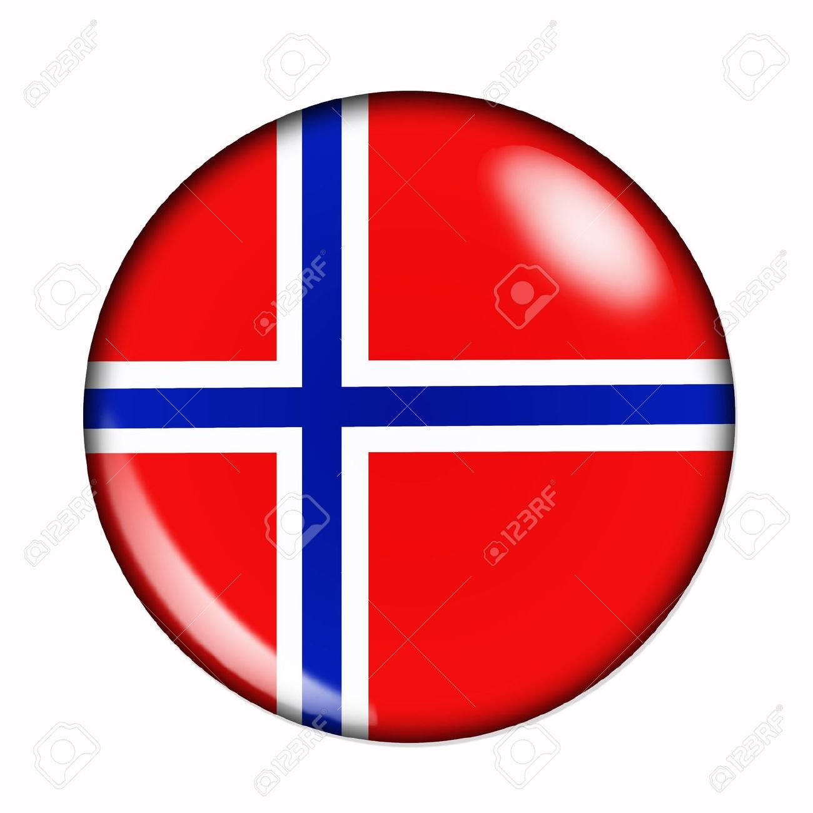

Hello, My name is Olga Vasylieva. I am from Ukraine where I graduated collage in 2009. After 3 years and 10 month I earned junior technologist diploma. My specialty is: Material processing with use of machine tools in computer automated lines. I came to United States from Ukraine trough AuPair program, my goal was to enchence my english language skills and help to promote the social and educational development for kids in my host family. I got a lot of experience during these awesome program, so after finished year living with host family I presided my career in school. Recently, I passed NCLB test for paraeducators and obtained my certification to work in special education classes. Since 2015 i am working in Live Oak Elementary school but in couple month i am planing to start subbing. l am artistic person, passionate in drawing with acrylic paints and love bake pastries!!! Currently, I am learning front-end web development. In my spare time I enjoy spend time out with my 5 year old son, dance zumba, tabata bootcamp and yoga. We love travel!!!!Our recent trips were to Uzbekistan in July and Israel in August 2016 ! Next stop is Norway !